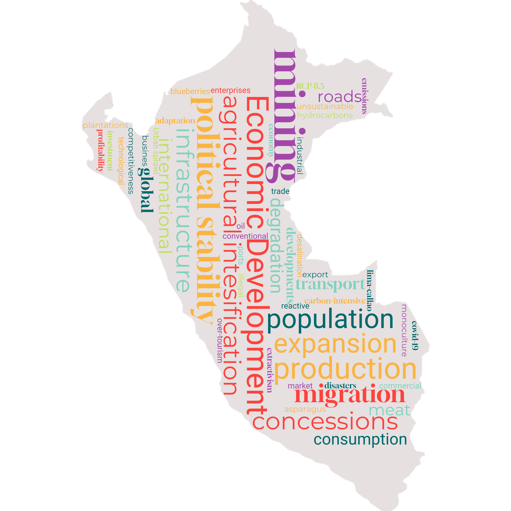

Business as Usual
The landscape of Peru in 2060 is emblematic of the drive for economic development at the expense of improving environmental sustainability. Agriculture and extractive activities have expanded to dominate large parts of the country exacerbating undesirable land use trends of deforestation and urban sprawl. The impacts of climatic change in terms of water and food security drive migration of the population from the mountainous regions to the coastal and amazonian areas.

Characteristics
 Climate Change: RCP 4.5
Climate Change: RCP 4.5
 Population: 39.81 million by 2060
Population: 39.81 million by 2060
 Economic development: 1007 billion USD
Economic development: 1007 billion USD
 Value perspective on nature: Instrumental
Value perspective on nature: Instrumental
 Protected areas (proportion of Peru under protection): 25% by 2030
Protected areas (proportion of Peru under protection): 25% by 2030

Shifting Values and Lifestyles
As a result of the COVID-19 pandemic and political instability in the late 2010’s Peru continues to prioritise economic development over addressing climate change and environmental degradation. Nature continues to be primarily viewed as a resource for economic growth, with little regard for its intrinsic value or its role in providing regulating and supporting ecosystem services necessary for maintaining quality of life (1).
While economic development has helped to alleviate some social and economic inequalities, conservative social policies still leave significant gaps in access to basic services and education. By 2060 GDP per capita reaches approximately 1007 billion USD (following SSP2, unit converted to USD using purchasing power parity (PPP) in 2017; (2)), reflecting robust yet uneven economic progress. Consequently, environmental awareness and responsibility is still of limited concern for the majority of the population. Due to improvements in standards of living, the population continues to grow at a moderate rate reaching 39.81 million by 2060. This combined with a relatively high per capita living space and a moderate rate of rural to urban migration (86.88% of population living in urban areas by 2060), means that the total area of land utilized for human settlements expands considerably. Given that sustainability is not a strong focus and food security has been improved for the majority of the population, there is no large-scale shift in personal consumption habits, leading to an increase in average per capita meat consumption. In addition, unsustainable modes of private transport continue to dominate.
Changing economic priorities
Economic development continues according to the current model of extractivism, maintaining reliance on resource and emission intensive activities (3). However, increasing political stability throughout the 2030s leads to greater foreign investment. This allows companies to steadily expand their international production networks, refining supply chains, diversifying operations, and tapping into global resources. This incremental growth leverages established trade agreements and gradual policy improvements to enhance efficiency and profitability, maintaining competitiveness without dramatic shifts from current practices1. These developments reduce the extent of the informal economy although Lima-Callao continues to be the only national metropolis and centre of service-based economic activities.
Across the primary sectors, there is moderate adoption of new technologies, although these are focused on improving production and not necessarily sustainability (4). This process occurs asymmetrically, with larger businesses displaying much more success in technological adoption whereas small and medium sized enterprises are limited by a lack of capacity.
In agriculture, the broad transition from subsistence to commercial farming continues driven by demand for the export market. This results in an increase in agricultural intensification and the cultivation of non-native crops such as strawberries, asparagus and blueberries. There is also a greater amount of land utilised for livestock production to sustain the demand for meat products. As a result, the area of land utilized for agriculture expands significantly, coupled with a higher degree of intensification. This is accompanied by a shift from artisanal to industrial fishing and the expansion of aquaculture.
Rising international mineral prices, particularly for copper, drive continued expansion of mining activities. This results in the allocation of additional mining concessions, with minimal attention to sustainability improvements in the sector. Weak enforcement of regulations, coupled with lax environmental legislation, leads to high rates of concession exploitation, while small-scale illegal mining remains persistent. The current carbon-intensive model of mass tourism is maintained (5). It prioritises conventional attractions, contributing to over-tourism in certain areas without significant efforts to reduce environmental impact.
Indigenous Communities
Despite formal land tenure rights in some regions, weak enforcement leaves Indigenous communities vulnerable to land grabbing and resource exploitation. Social inequalities persist, limiting access to basic services and economic opportunities. While the importance of Indigenous knowledge is acknowledged in some policy frameworks, it remains marginalised in decision-making, reducing its influence on conservation and development (6). A lack of political will to strengthen land rights and governance structures further excludes Indigenous communities from shaping policies that impact their territories and livelihoods (7).
Governance, Planning and Resource Management
Weak institutional coordination across governance levels and sectors continues to hinder the development of cohesive policies (8). Public participation is limited to token consultations, and decision-making processes lack transparency (9). Despite this, the trend of political stability does marginally improve public trust in the state.
Overall Land use planning is improved, with every department completing Ecological and Economic Zoning plans (10). However, planning remains largely reactive and subject to capture by economic actors, meaning that developments are sometimes allowed to proceed in ecologically sensitive areas in contradiction of the zoning plans. This is especially true of urban expansion, which still occurs informally due to migration to areas of increasing economic activity and because of climatic change induced impacts.
The 2023 modification to the forest law is not repealed and forestry policy remains focused on short-term economic gains2. Existing forest concessions prioritize timber production although there is an increase in the number and scale of forest-based carbon credit projects which contribute towards reducing deforestation (11). However, because of the overall orientation of the sector alongside weak enforcement of regulations, the conversion of forest to agricultural land by small scale farmers is allowed to persist. This in addition to the granting of mining concessions on forested lands leads to a trend of continued forest cover loss and degradation until 2060.
3 https://observatorio.ceplan.gob.pe/ficha/o17_2024
4 https://observatorio.ceplan.gob.pe/ficha/o6_2024
Transport infrastructure development focuses primarily on road improvement, enhancing connections and the quality of road networks without significant attention to minimizing ecological impacts. There is a particular expansion of export-related infrastructure (e.g. ports and processing facilities for agricultural and mining products) in key production sites such as the northern and southern coastal regions3. Communications infrastructure is improved however access to digital services remains uneven (12). To adapt to the increasing intensity and severity of natural disasters there is a strong focus on developing more resilient infrastructure4, although is achieved via improvements to engineering rather than the incorporation of Nature-Based Solutions.
Inadequate planning and management of water resources alongside global high intensity climate change (RCP 4.5 / RCP 6.0) exacerbate problems of water insecurity. Disruption to water availability and quality in mountainous regions driven by substantial further decline of glacial areas forces migration of the population to the coast. Given the increased demand for water for the agricultural sector there is a need to implement expensive technological solutions such as water desalination plants.
Ecological Restoration and Protection
Due to a lack of political and social support there is no expansion of conservation areas beyond the existing coverage of 17.88% and hence Peru does not achieve its international commitment to protect 30% of the national territory by 2030. Programs to mitigate the trend of biodiversity loss are hindered by competing sectoral priorities and insufficient integration of long-term sustainability goals. Environmental restoration efforts are minimal and primarily driven by regulatory compliance. Degraded areas are often repurposed for monoculture plantations or urban expansion, exacerbating habitat loss and ecosystem degradation (13).